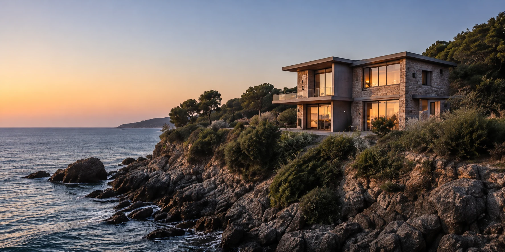
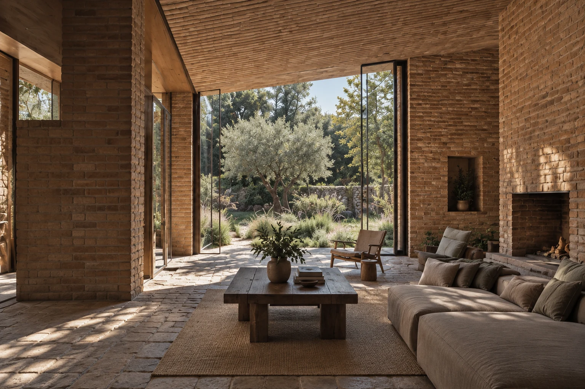
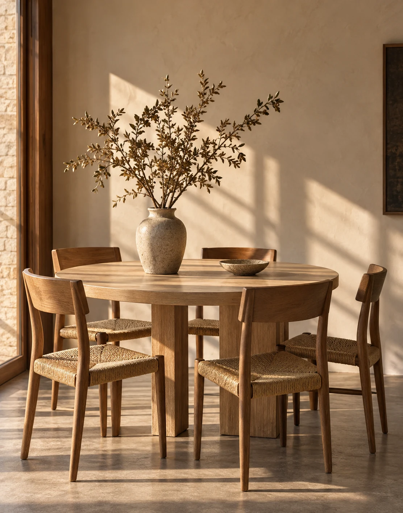
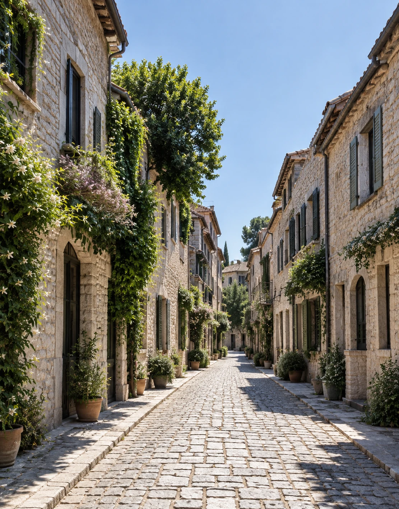
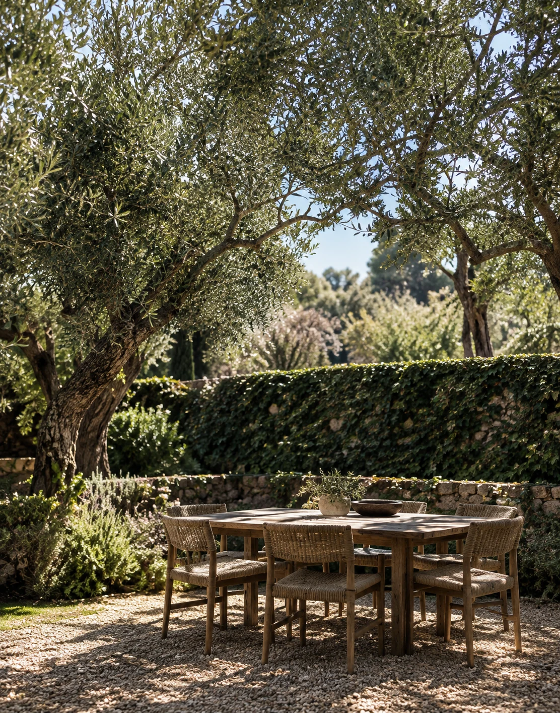

01
Tide HouseCoast
A modern coastal home with expansive views and easy living.

Distinctive homes.
Carefully selected.
feel different.
Coastal retreats, city homes and country escapes. A thoughtful collection of properties in extraordinary places.
It's the details, the surroundings and the feeling a place gives you. We look deeper to help you find what fits.
Arrange a viewing


The coastal home in this collection is above this price. Adjust the budget or explore all three homes.
A living room that opens to the garden.
Brick you can read by touch.
Space to let the day unfold.
The main living space is arranged around a sheltered courtyard. A continuous stone floor carries the room toward the garden, while deep brick reveals soften the transition between inside and out.
3 bedrooms, 2 bathrooms.
2,140 sq ft of interior space.
Open living and dining area.
Sheltered courtyard garden.
Stone terrace at the threshold.
Planting visible from the living room.
Ask about access and parking.
Request further property details.
Viewing times are by arrangement.
Explore the photograph and essential details, or preview a viewing inquiry. Further property information is not included in this sample.
Arrange a viewingTell us what works for you. We will use the details to discuss a visit and any access needs.
This was a preview. No inquiry was sent and no viewing has been booked.
Return to the home